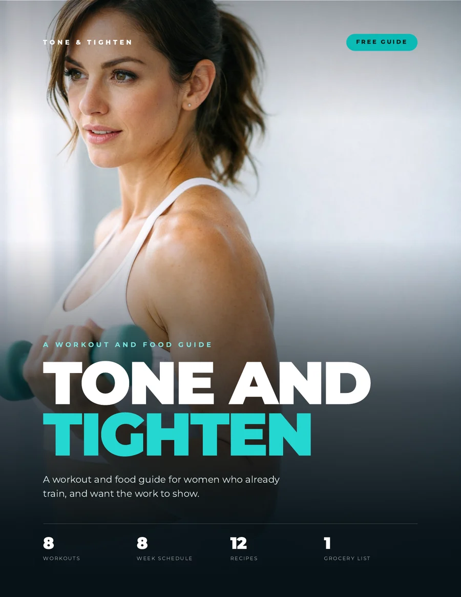
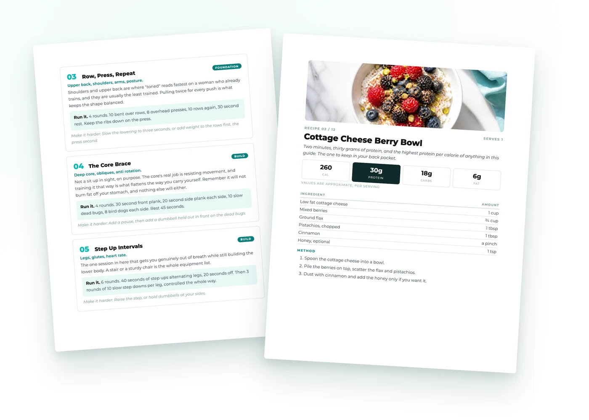
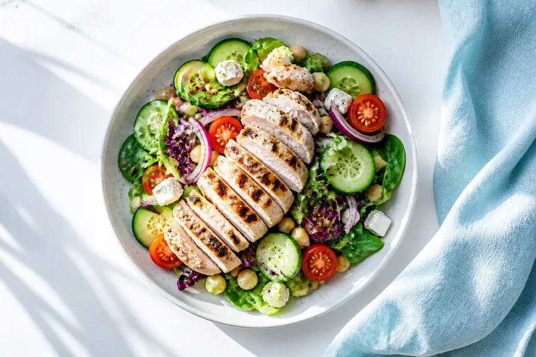
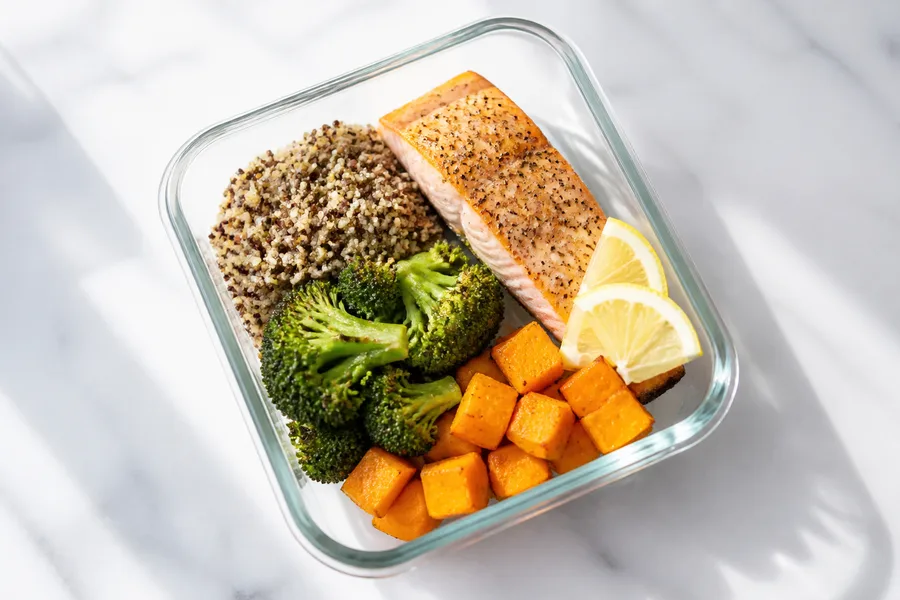
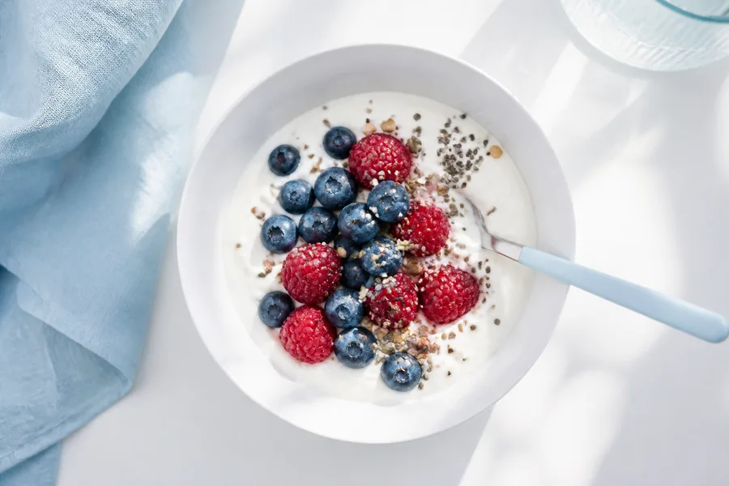

For women who already train, eat reasonably well, and still can't shift the last bit.
Free. No card, no catch.

You train, you eat reasonably well, and the same two or three places look the same as they did a year ago. That is usually a programming problem, not an effort problem.
Same weight, same reps, same eight weeks. Every session in here has a make it harder line, because that line is the difference between exercising and training.
Most active women eat about half the protein they need to hold muscle while eating lighter. The guide gives you the number and twelve recipes that hit it.

No gym, no machines, and nothing that needs more than a pair of dumbbells and a step.
Glutes and hamstrings, single leg, upper back and shoulders, deep core, intervals, a full body circuit, a density day, and a ten minute session for the day you were going to skip.
Three sessions a week, laid out week by week, so you are never deciding what to do at six in the morning.
You cannot choose where your body loses fat. What you can do is build the muscle underneath and carry less over the top, and the guide is built on that instead of on a workout for one body part.
One number, worked out from your body weight, and the reason it matters more than anything you change about your training.
Every one tells you the protein it delivers. Most take under twenty minutes and several are made the night before.
Everything the twelve recipes need, grouped the way a shop is laid out, plus a one page summary for the fridge door.



Eight twenty minute workouts, twelve high protein recipes, and the eight week schedule that tells you which session you are doing today. Yours in about a minute.
Free. No card, no catch.
This guide is general fitness and wellness information for educational purposes only and is not medical, nutritional, diagnostic, or treatment advice, and it is not a weight loss program. Individual results vary. Consult your physician or a qualified healthcare provider before beginning any exercise or nutrition program, especially if you are pregnant, nursing, have an injury or an existing medical condition, or take medication.